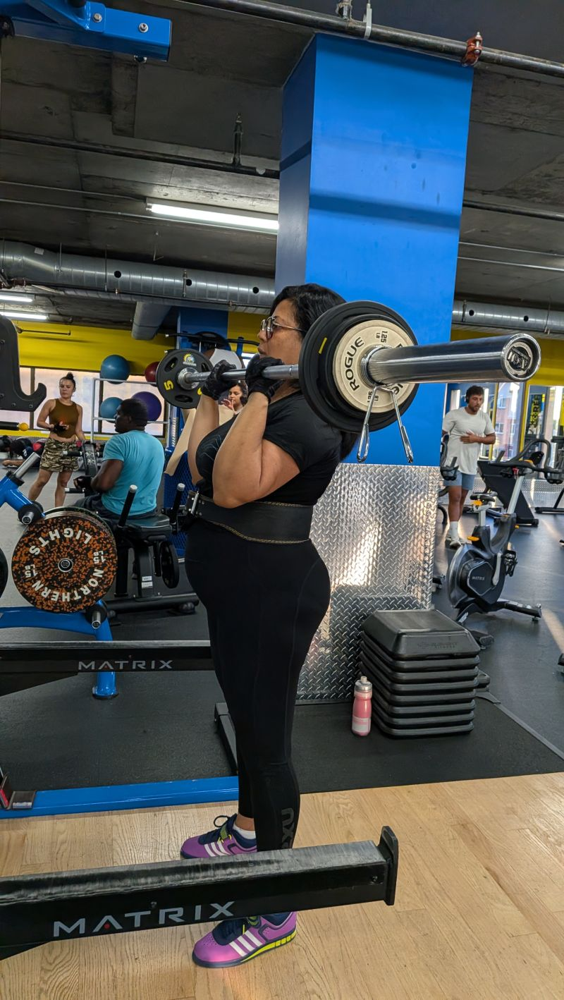
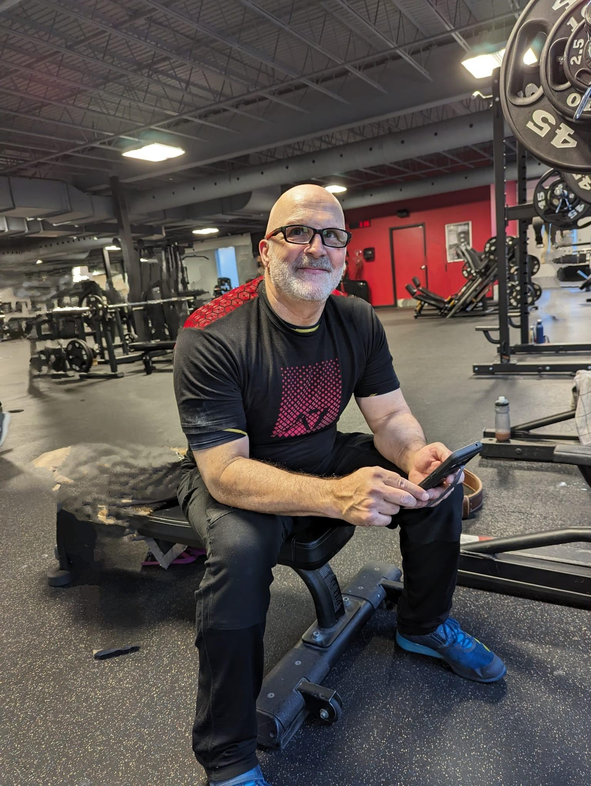
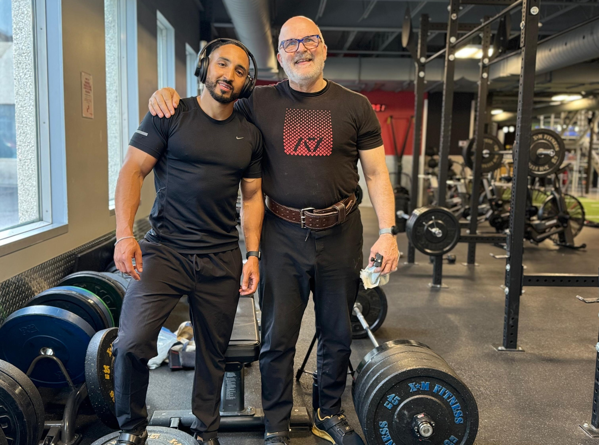

Wealthspan Strength est un système de performance affirmant la vie, pour les professionnels et les gens en croissance qui ont décidé que prendre soin de SOI est une priorité numéro un. La force au barbell et la performance d'affaires, lorsqu'elles s'unissent à la discipline et à un état d'esprit bouddhiste (cause et effet), forment une force combinée de transformation positive.
Vous vous êtes retrouvé à bout de souffle dans un escalier que vous montiez deux marches à la fois. Vous n'avez rien dit et pris l'ascenseur le lendemain.
Vos chiffres plafonnent depuis trois trimestres. Vous étiez excellent là-dedans avant. Maintenant, le brouillard de 14 h gruge la partie de la journée où les ventes se concluaient.
Quelque part en chemin, vous avez accepté le déclin comme prix du succès. Personne ne vous a facturé ça. Vous vous êtes porté volontaire.
La motivation, c'est une humeur. La capacité, c'est un actif. Votre rendement en affaires roule sur le même moteur que votre rendement au gym : le corps et le système nerveux en dessous. Quand ce moteur manque de puissance, votre travail plafonne, peu importe la qualité de votre stratégie.
Wealthspan Strength applique un seul principe aux deux côtés de votre vie : la surcharge progressive. Au gym, vous ajoutez un peu de poids selon un horaire et votre corps s'adapte. Dans votre pipeline, vous ajoutez un peu de pression disciplinée selon un horaire et vos affaires s'adaptent. Même calcul. Même compte. Les dépôts se cumulent; les semaines manquées aussi.

Un entraînement au barbell bâti autour des quatre grands mouvements : squat, soulevé de terre, développé couché, développé militaire. La force, c'est votre réserve d'énergie. Entraînez-la et le brouillard de 14 h se lève, le sommeil se creuse, et votre cerveau en profite directement, parce que soulever lourd nourrit le système nerveux qui fait rouler votre pensée. Trois séances par semaine, programmées dans une feuille partagée, coachées par Denis dès le premier jour.
La capacité en affaires, c'est encaisser les coups et continuer d'exécuter : le client qui disparaît, le trimestre difficile, la paie du vendredi qui fait peur. Le coaching roule sur la méthode TEAMMS, en commençant par le ciblage jusqu'à ce que votre portrait soit parfaitement clair, parce que sans clarté, pas d'exécution. Ensuite, on bâtit un rythme de prospection hebdomadaire qui tient sous pression.
L'état d'esprit sous les deux autres. Cause et effet : les dépôts que vous faites aujourd'hui décident de la personne qui se présentera l'an prochain. Tiré des deux décennies et demie de pratique bouddhiste quotidienne de Denis, offert comme philosophie de travail, jamais comme recrutement. Un appel par semaine, un suivi quotidien, et des questions qui gardent la tête claire quand la pression arrive.

Je suis entrepreneur depuis 36 ans. La phrase impressionne, jusqu'à ce qu'on sache ce qu'il y a dedans.
Une faillite. Des paies qui ne passaient pas pendant que mon personnel attendait. Une mise à pied d'un poste de vice-président, deux mois avant l'arrivée de ma femme au Canada. Je me suis rebâti chaque fois.
Les gens me demandent mon secret. Ils s'attendent à une routine matinale avec de l'eau citronnée. Mon secret pèse 450 livres.
Je soulève lourd chaque semaine, à 67 ans. Pas pour le miroir. Pour la capacité. La barre m'a appris ce que les affaires ne disent jamais tout haut : le poids se fiche de vos excuses. Chaque répétition est un dépôt. Chaque semaine manquée, un retrait. Cause et effet, sans exception.
Ce principe a rebâti mon corps. Il a rebâti mes revenus. Il fonctionne sur tout ce que vous visez avec. La faillite a pris mon argent. Ma capacité est restée. C'est comme ça que je suis revenu.
Vous pouvez faire pareil. Passez sous la barre. Réglez l'état d'esprit. Bâtissez la capacité, et les objectifs cessent d'être des souhaits. Un client a commencé à soulever à 76 ans. À 77, il est tombé durement sur un trottoir et s'est relevé comme s'il avait accroché un lacet. Voilà ce qu'une année de dépôts achète.
Qu'est-ce que vous déposez cette semaine?
Une conversation. Où vous êtes, où sont les chiffres, ce qui glisse et pourquoi. On creuse jusqu'à ce que le portrait soit clair sur les deux fronts, parce que la clarté vient avant tout programme. Ensuite vous DÉCIDEZ : une vraie DÉCISION, sans hésiter, comme les vrais champions.
Vous recevez une seule feuille partagée : vos mouvements, vos charges, vos temps de repos, plus vos cibles de vente et les actions hebdomadaires qui les font bouger. Vous n'avez jamais à deviner ce que la journée demande.
Un appel fixe avec Denis chaque semaine. On revoit les chiffres, on ajuste les charges, on travaille les obstacles. Entre les appels, vous êtes au gym deux ou trois fois, alors le plan reste entre vos mains six jours sur sept.
Les charges, les protéines, le sommeil, les conversations ouvertes, les défis et occasions de la semaine. Les chiffres nous disent quoi changer, les résultats nous disent ce qu'on a accompli. Quand la vie s'en mêle (voyages, salons, un mois difficile), le programme plie sans casser, comme le bambou.
À diriger des entreprises avec du personnel et une paie sur la ligne, et à coacher des vendeurs, des équipes de vente et des opérations de revenus à travers le quotidien.
Clients servis en 36 ans à diriger des entreprises et à coacher des vendeurs, des équipes de vente et des opérations de revenus vers leur meilleur. Le bilan existait bien avant la marque.
Le soulevé de terre de travail de Denis, tiré cinq répétitions, en tant que grand-père. Programmé de la même façon que vos premières 95 livres le seront.

Il y a quelques années, je me sentais physiquement fragile et je voulais faire quelque chose. En parlant avec Denis, il m'a parlé de la musculation pour bâtir du muscle. Il m'a montré les bonnes techniques et la bonne forme, il m'a encouragé, et j'ai commencé à soulever des poids. J'ai dans les 75 ans et je tiens la routine assez bien, depuis deux ou trois ans. Un jour, je marchais dans la rue et je suis tombé, très fort. J'ai atterri sur l'épaule, je me suis relevé, et rien n'était blessé. En touchant mon épaule, j'ai compris que le muscle que j'avais bâti, surtout dans le haut du corps, m'avait vraiment sauvé. Normalement, je suis certain que je me serais cassé bien des choses. Là, même pas de douleur. J'étais sincèrement surpris. J'attribue ça au muscle bâti, et aux encouragements de Denis à continuer. J'apprécie vraiment ses conseils et ses techniques précises. Ça m'a évité bien des ennuis.
En matière de développement de la force, Denis est extrêmement compétent. Il est méticuleux et sait enseigner les aspects techniques de chaque mouvement en détail, tout en restant un coach motivant et bienveillant. Je recommande fortement Denis à quiconque veut améliorer sa force musculaire.
J'ai eu l'occasion de travailler avec Denis en force et conditionnement, particulièrement pour raffiner ma technique au développé couché, au squat, au développé militaire et au soulevé de terre. Denis possède une vaste connaissance et une capacité exceptionnelle à la transmettre. Grâce à ses explications claires, ses corrections et son attention aux détails, j'ai mieux compris chaque mouvement et nettement amélioré ma technique. Ce que j'ai le plus apprécié, c'est sa passion pour son domaine et son souci sincère des gens. On voit qu'il aime vraiment ce qu'il fait et qu'il tient à partager ses connaissances pour aider ceux qu'il coache à progresser. Ce fut une expérience formidable. Denis est un excellent coach avec une belle personnalité, et je le recommande sans hésitation.
J'ai commencé à travailler avec Denis juste au moment où je me lançais à mon compte, quand tout semblait incertain. Je ne me suis jamais sentie aussi forte ni aussi sûre de moi. Bâtir ma force et régler mon état d'esprit m'a donné la capacité de faire grandir mon entreprise et d'en prendre plus que je ne le croyais possible.
J'ai commencé à m'entraîner avec Denis et, en quelques séances seulement, j'ai gagné en force et en confiance. Un grand avantage a été de comprendre comment l'entraînement en force agit sur mes muscles et mes os; tout était expliqué si clairement. Denis est un grand motivateur qui partage ses propres expériences. Il m'a aidée à découvrir l'amour de la musculation et du fait de devenir plus forte! Merci, Denis!
Un appel. On trace vos cibles sur tous les fronts, et vous décidez si le programme vous convient. Apportez vos chiffres.
LA FORCE SUR TOUS LES FRONTS